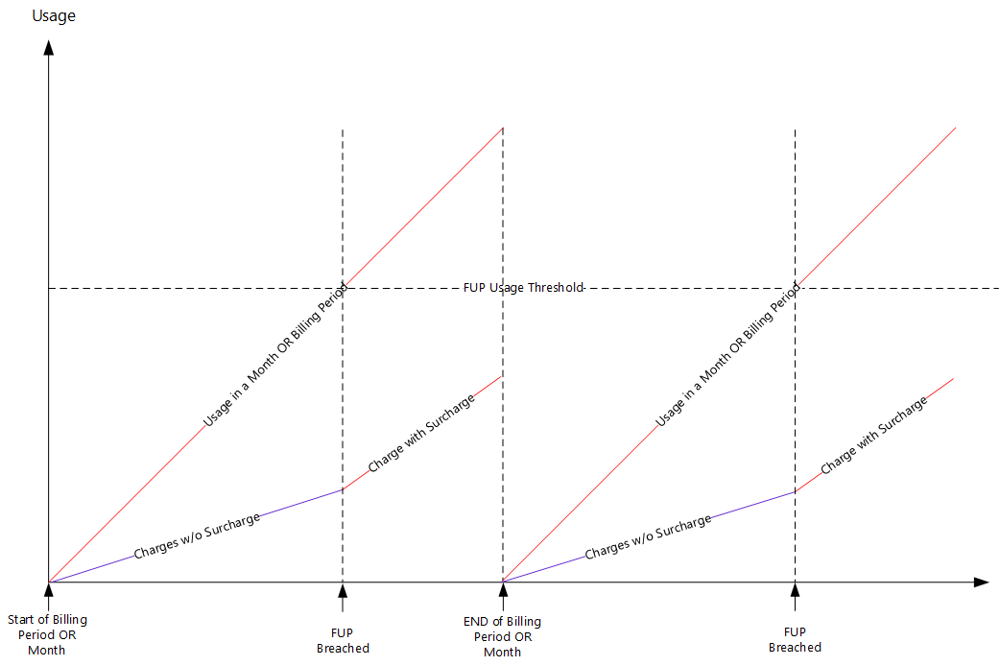

The Block-Next-Rate action in the THRESHOLD_PROFILE source
context blocks the next rate, so that only the primary rate is applied.
A default user is charged with both primary and secondary tariff. When the configured
threshold for FUP is reached, the Block-Next-Rate action is set to
True, so that only primary tariff is charged.
FUP Counter
The FUP counter can be provisioned both on device level and group level.
- There is no surcharge before the FUP limit threshold.
- Upon reaching the FUP limit, the call is charged with both primary tariff,
and secondary tariff.
- FUP counter supports the related Near Threshold and Limit
Reach notifications.
- FUP subscription, unsubscribe, and query by external system is done through
REST API.
Usage based FUP
- The Fair Usage Policy is purely usage based.
- The FUP parameter defines the SMS, MMS, voice (outgoing or incoming), and
data usage, within a month or the billing period, that a subscriber is
allowed to roam in the EU without incurring a surcharge.
- A separate usage threshold is defined for each kind of traffic.
- The number of EU roaming days are monitored at the subscriber level from the
start of the billing period (daily, weekly, monthly or annual time period),
or start of the month.
- The first EU roaming event of the day is used to trigger the day
counter.
- Any usage beyond the threshold is charged at a domestic charge in addition
with surcharge. It is capped at EU tariff rates. In such conditions the
surcharge can be applied also to the incoming calls.
- The roaming counter is reset at the end of the month, or end of the billing
period to restart the monitoring.
- The FUP value should be defined at the global level or the domestic tariffs
so that the policy threshold can be varied based on the type of tariff or
product subscribed. FUP may not be applied for some tariff or products. For
specific subscribed and active products, the FUP counter should not be
increased.
